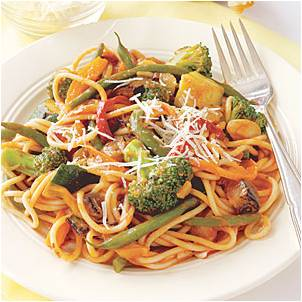

Dine in Dublin City - Toscana Italian Dishes |
||
| Starter-Antipasti | ||
|---|---|---|
| ZUPPA DI RIBOLLATA Homemade Tuscan bean soup.(V)(DF) |
€4.95 | |
| ZUPPA DEL GIORNO Home-made seasonal soup of the day, please ask your server (V)(DF) |
€5.75 |  |
| BRUSCHETTA CON POMODORO Toasted Tuscan bread with sun-ripened beef tomatoes. (V)(DF) |
€6.95 | |
| POLPETTE DI PESCE Fish balls, stuffed with fresh fish, organic rocket pesto. |
€7.75 | |
| INSALATA DI POLENTA Crisp organic leaves, seasonal fruit, roasted walnuts, polenta croutons. (V)(LF) |
€7.50 | |
| INSALATA CAPRESE Sliced mozzarella and sun-ripened wine tomatoes with garden basil leaves. (V) |
€7.25 | |
| INSALATA TRICOLORE As above with avocado(V) |
€8.65 |  |
| MINESTRONE SOUP Made fresh daily |
€4.95 |  |
| CORN-FED CHICKEN WINGS Wings corn-fed with our new secret HOT sauce. |
€6.95 | |
| SUPPLI Golden croquettes of arborio rice, fresh mozzarella cheese. (V) |
€6.95 |  |
| ZUCCHINE CON GAMBERI Grilled courgette, fresh prawns and vine cherry tomatoes. (LF) |
€8.95 | |
| CALAMARI FRESCHI Fresh pan-fried calamari, fresh garlic, lemon reduction. Please not these are not breadcrumbed.(LF)(GF) |
€9.80 | |
| SFERE DI CARNE Meatballs marinated to a traditional Tuscan recipe, with mild chilli sauce. |
€7.25 | |
| ANTIPASTO ITALIANO Selection of cured meats, Italian cheese, sun-dried tomatoes with pickled home-grown vegetables. |
€12.95 | |
| Pastas - Le Paste | ||
| RAVIOLLI LIGURIA Fresh hand-made Raviolli ricotta & spinach, with ratatouille pesto cream. (V) |
€15.95 |  |
| TAGLIATELLE CON SPINACI E FUNGHI Tagliatelle with fresh spinach, garlic and mushroom cream.(V) |
€14.75 | |
| PENNE ALL'ARRABIATA CON POLLO Fresh Chicken, chilli and tomato sauce - Tuscan style.(DF) |
€14.25 | |
| SPAGHETTI PRIMAVERA Seasonal vegetables with olives, cherry tomato and herb sauce.(DF) |
€13.45 |  |
| LINGUINE CON GAMBERI E POLLO Linguine Pasta, fresh chicken strips fresh prawns, herb cream with poached cherry tomatoes. |
€18.95 | .jpg) |
| LINGUINE DI PESCE Linguine, fresh prawns, mixed seafood, in a white wine biscque. |
€18.95 |  |
| SPAGHETTI ALLA CARBONARA Traditional pancetta, egg and ground black pepper in a creamy white wine sauce. |
€13.95 | |
| RIGATONI AMATRICIANA Strips of panchetta, cooked in a tomato & white wine. |
€13.95 | |
| TAGLIATELLE ALLA TOSCANA Pasta tossed with corn-fed chicken strips and herbed cream. |
€15.95 | |
| Poultry - Pollo | ||
| POLLO LIMONE Breast of chicken marinated in fresh lemon, cooked over a charcoal grill. (LF) |
€15.95 | |
| POLLO ALLA FIORENTINA Grilled breast of chicken cooked in a field mushroom cream. |
€15.95 | |
| POLLO ALLA TOSCANA Chicken supreme with spinach, three cheeses, wrapped in Parmaham, white wine & mustard cream. |
€16.95 | |
| Meat - Carne | ||
| VENISON IN CHIANTI JUS Venison steak with Chianti and grape jus, sauteed rosemary potatoes. |
€23.95 | |
| BISTECCA DI MANZO Prime 10oz Irish grilled Sirloin Steak served with, creamed brandy peppercorn sauce, garlic herb butter or porchini mushroom sauce. |
€22.50 | |
| FILETTO DI MANZO Charcoal grilled 8oz of fillet steak, served with creamed brandy peppercorn sauce, garlic & rosemary butter or porchini mushroom sauce. |
€23.95 | |
| Fish - Pesce | ||
| SEARED FILLET OF SEA BASS Seared fillet of Sea bass with lemon mash and roast vegetables |
€21.95 | |
| SALMONE AL FORNO Crisp fillet of Irish salmon with lemon herb cream. |
€18.95 |  |
| PARCEL OF SEABREAM Whole Sea Bream oven-cooked with lemon and garlic envelope with shellfish. (LF) (GF) |
€21.95 | |
| Risottos - Risotti | ||
| RISOTTO VEGETARIANA Roasted sweet pepper risotto with vegetables & gorgonzola. |
€15.95 | |
| SEAFOOD RISOTTO Arborio rice delicately infused with mixed seafood, mussels, prawns & clams. |
€16.95 | |
| Salads - Insalate | ||
| CHICKEN CAESAR SALAD Grilled chicken strips, crisp romaine leaves, panchetta, herbed croutons with gran moravia parmesan shavings. |
€14.50 | |
| DUCK SALAD Garden rocket and mixed leaves with warm fresh duck, sun-rippened cherry tomatoes, sweet balsamic & parmesean shavings. |
€16.50 | |
| GOATS CHEESE SALAD Special house salad of organic leaves, fresh goats cheese, walnuts cherry tomatoes. |
€14.95 | |
| Pizzas - Pizze | ||
| MARGHERITA Mozzarella cheese.(V) |
€10.80 |  |
| CAPRESE Fresh mozzarella rings, fresh cherry tomatoes, basil pesto.(V) |
€14.50 | |
| TOSCANA Ham, salami, mushrooms, peppers, onions, olives, pepperoni, garlic. |
€15.25 | |
| A PIACERE As you wish, choose four of your favourite toppings for your pizza. |
€14.95 | .jpg) |
| HAWAIIAN Ham with sweetcorn & pineapple. |
€13.00 | |
| FRUTTI DI MARE Tuna with mussels, shrimps, anchovies, garlic. |
€15.50 | |
| TRE SALUMI Pepperoni, Salami & Ham. |
€14.75 | |
| CALZONE Folded & filled with ham, mushrooms, onions. |
€14.15 | |
| Children's Menu €8.50 | ||
|
We love our children as much as you! Our family restaurant has healthy choices (For the under 9's) Available 7 Days a week till 7.00pm. Includes Juice/Milk or Soda, Main-course and a choice of Fresh Fruit pieces or jelly & ice-cream. Corn-Fed Chicken strips with mash potato Small pizza with 2 toppings Spaghetti Bolognese Fresh hake goujons on mash Ham Burger & Fries Fresh Vegetables May be replaced as a side order | ||
Bon Apetito!!! | ||